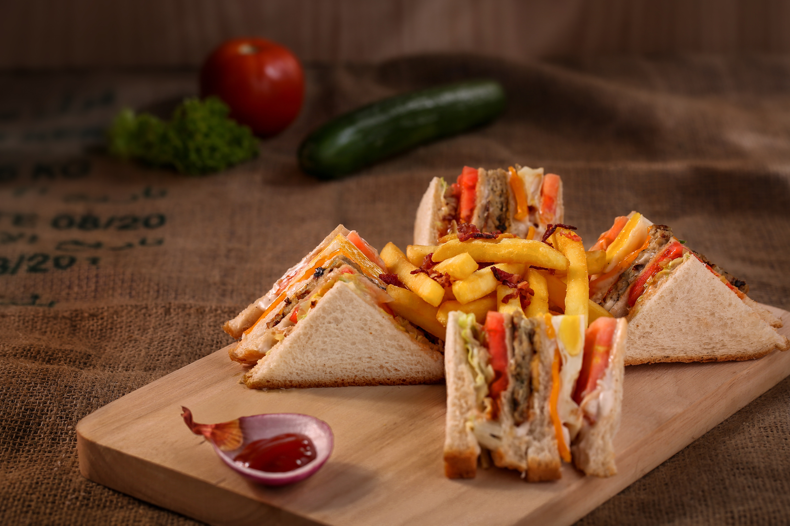

Sandwich Maker
Recipe Of
Paneer Sandwich
Paneer Sandwich
INGREDIENTS...
- 4 slice white firm bread
- 1/2 cup paneer crumble
- 1/2 cup bell peppers (chopped)
- 1/2 tsp salt
- 1/8 tsp black pepper
- 1/2 tsp ginger paste
- 1 tsp green chili (chopped)
- 2 Tbsp cilantro (chopped)
- 2 Tbsp soft butter

METHOD...
- Knead the paneer, add all the
ingredients and mix it well. - Spread paneer mix over 2 slice
of bread and cover with other
slice of bread. - spread the butter lightly on top
side of the sandwich, other side - Put the butter after putting
the sandwich in sandwich maker. - Cook over medium heat from both sides
until golden brown, each side.